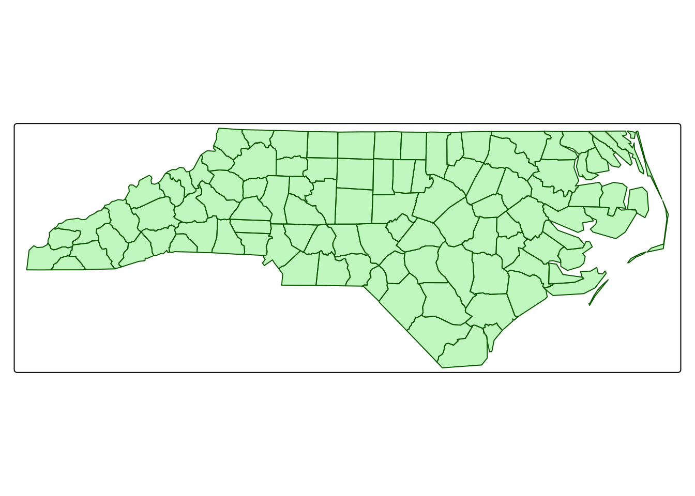
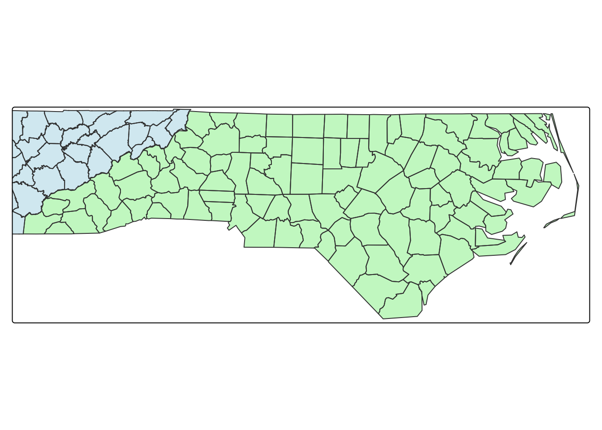
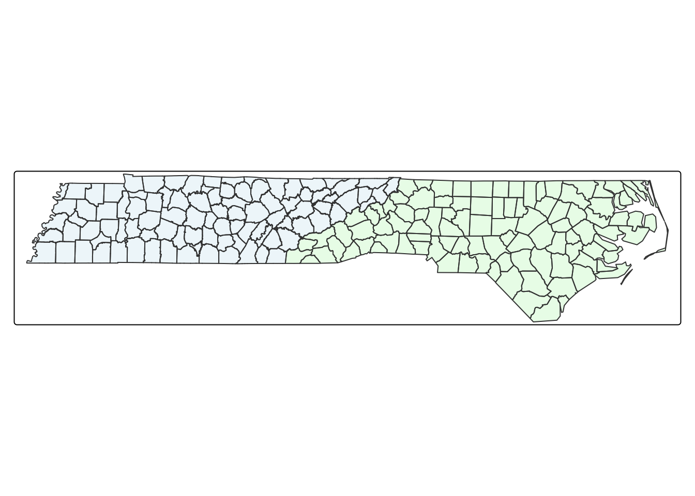
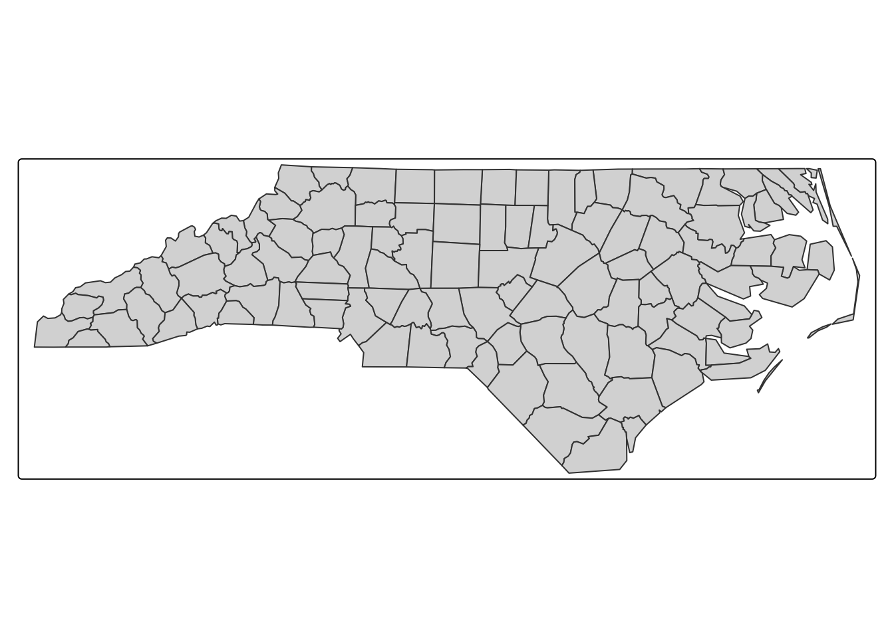
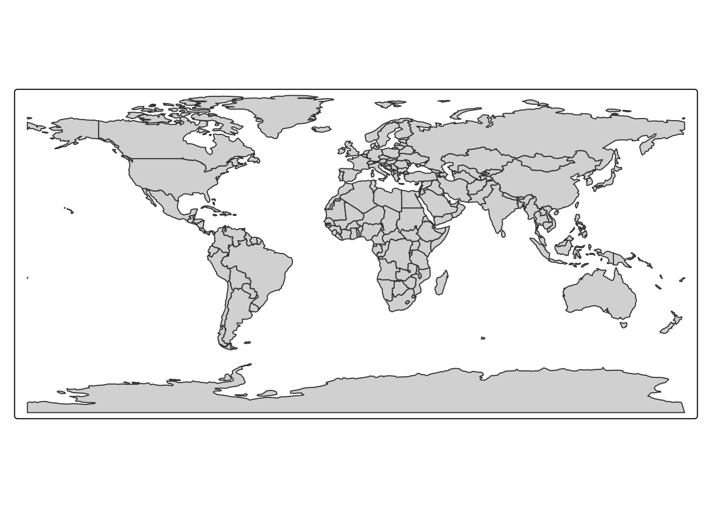
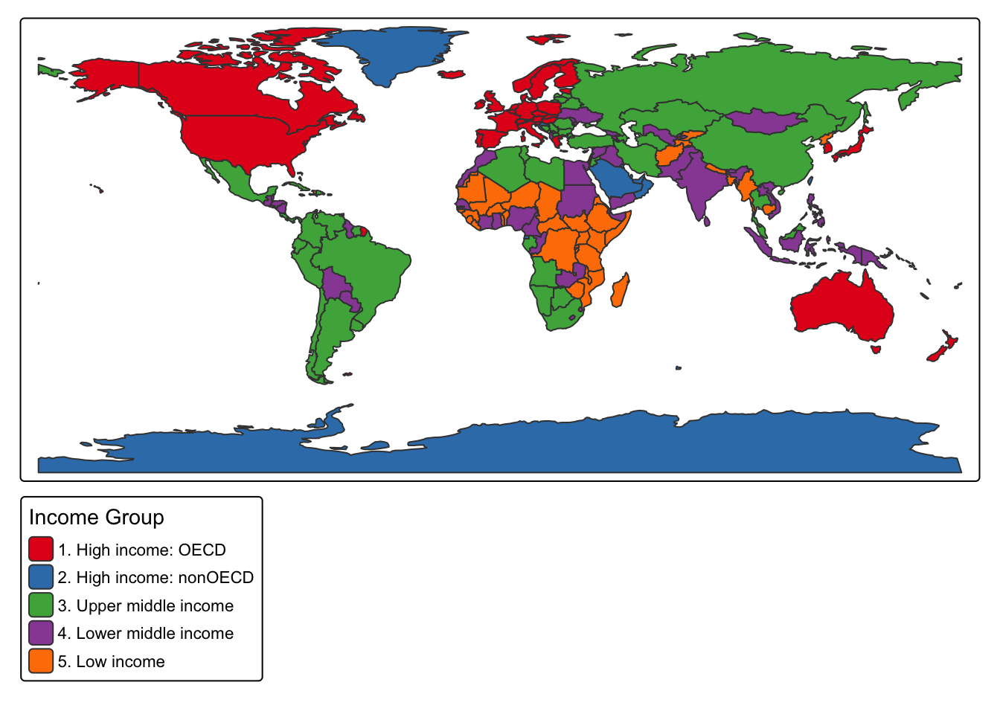
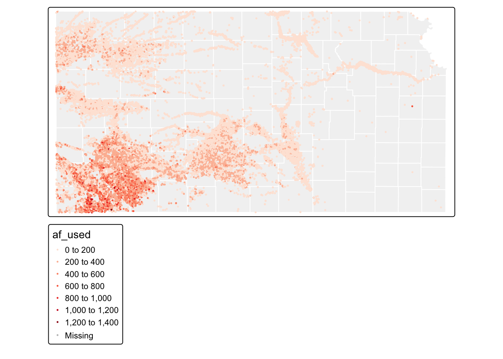
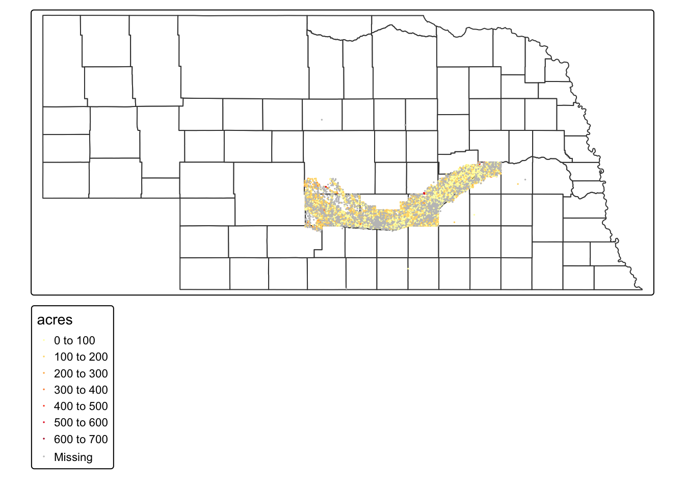

In this chapter, we will learn how to work with vector spatial data in R using the sf package. The sf package implements the Simple Features (sf) standard for representing spatial objects in R.
Much of the structure of this chapter follows the excellent tutorial R as GIS for Economists by Dr. Taro Mieno, which provides a clear and practical introduction to spatial analysis in R.
We will begin by learning how sf objects store and represent spatial datasets. Understanding this structure is important because most spatial operations in R rely on it.
After that, we will move on to several practical tasks that you will commonly perform when working with spatial data:
Reading and writing spatial data, including shapefiles and other formats.
Projecting and re-projecting spatial objects (changing coordinate reference systems)
Converting between sf and sp objects
Performing non-interactive geometric operations (operations on a single spatial dataset)
Creating buffers
Calculating polygon areas
Finding polygon centroids
Calculating the length of line features
9 Setting up
Before we begin working with vector data, you will need to complete the following setup steps:
Create a new R Project (for example, name it vector-data)
Inside your project folder, create a new folder called data
Download the datasets from Canvas and save them in the data folder
Create a new Quarto file (.qmd) where you will write and run the code for this chapter
Organizing your project this way will make it easier to keep your data, code, and outputs well structured as we work through the examples.
Loading the packages we will use
Code
if (!require("pacman")) install.packages("pacman")
Loading required package: pacman
Code
pacman::p_load( sf, # vector data operations tidyverse, # data wrangling data.table, # data wrangling tmap, # make maps mapview, # create an interactive map patchwork, # arranging maps tigris)
First, we check whether the pacman package is installed. If it is not installed yet, R installs it automatically.
The pacman::p_load() function is convenient because it installs packages (if needed) and loads them at the same time. This avoids having to run install.packages() and library() separately for each package.
10 Spatial data structure
In this section, we will learn how the sf package stores spatial data in R. In particular, we introduce three key classes used by sf objects:
simple feature (sf) \(\rightarrow\) like a data.frame, stores attributes + geometry
simple feature geometry list-column (sfc) \(\rightarrow\) list column of spatial features (each row is a feature)
The sf package provides a simple and convenient way to store geographic information together with the attributes of geographic units in a single dataset. This type of dataset is called a simple feature (sf) object.
An sf object works much like a regular data frame, but with one important addition: it contains a geometry column that stores the spatial information (such as points, lines, or polygons). This allows us to keep both the geographic shapes and their associated data together in one structure.
To better understand how this works, let’s look at a practical example. We will use a dataset containing county boundaries in Tennessee, along with attributes describing each county.
Code
tn_co <-st_read("../data/vector data/tn_co.shp")
Reading layer `tn_co' from data source
`/Users/gperezqu/Library/CloudStorage/OneDrive-UniversityofTennessee/University of Tennessee/Teaching/R as GIS for Economists/data/vector data/tn_co.shp'
using driver `ESRI Shapefile'
Simple feature collection with 95 features and 25 fields
Geometry type: MULTIPOLYGON
Dimension: XY
Bounding box: xmin: 677977.3 ymin: 236914.2 xmax: 3245808 ymax: 860022.9
Projected CRS: NAD83 / Tennessee (ftUS)
The object tn_co is of class sf, which means it is a spatial dataset stored using the simple features standard.
Code
class(tn_co) # this dataset is of class sf
[1] "sf" "data.frame"
What does this dataset contain?
Code
head(tn_co) # take a look at the data
Simple feature collection with 6 features and 25 fields
Geometry type: MULTIPOLYGON
Dimension: XY
Bounding box: xmin: 2006425 ymin: 236914.2 xmax: 2586383 ymax: 827414.6
Projected CRS: NAD83 / Tennessee (ftUS)
OBJECTID STATEFP COUNTYFP COUNTYNS GEOID NAME NAMELSAD LSAD
1 1 47 065 01639749 47065 Hamilton Hamilton County 06
2 2 47 115 01639770 47115 Marion Marion County 06
3 3 47 185 01639800 47185 White White County 06
4 4 47 129 01639778 47129 Morgan Morgan County 06
5 5 47 013 01639728 47013 Campbell Campbell County 06
6 6 47 123 01639776 47123 Monroe Monroe County 06
CLASSFP MTFCC CSAFP CBSAFP METDIVFP FUNCSTAT ALAND AWATER INTPTLAT
1 H1 G4020 174 16860 <NA> A 1404935852 86587760 +35.1607616
2 H1 G4020 174 16860 <NA> A 1290244621 36484742 +35.1334215
3 H1 G4020 <NA> <NA> <NA> A 975592097 7113368 +35.9270486
4 H1 G4020 314 28940 <NA> A 1352439653 823017 +36.1386970
5 H1 G4020 314 28940 <NA> A 1243615772 46494677 +36.4015922
6 H1 G4020 <NA> <NA> <NA> A 1646324247 43852639 +35.4478181
INTPTLON Region District Grand Commission FarmBureau Shape__Are
1 -085.1977114 3 32 East 4 3 16055054290
2 -085.6183990 3 32 East 4 3 14281441600
3 -085.4557854 3 31 Middle 3 4 10576664499
4 -084.6392616 3 31 East 2 4 14565281812
5 -084.1592495 4 41 East 2 5 13886558611
6 -084.2497050 3 32 East 4 3 18191878883
Shape__Len geometry
1 650912.1 MULTIPOLYGON (((2179702 339...
2 528655.9 MULTIPOLYGON (((2104604 353...
3 603207.6 MULTIPOLYGON (((2183735 529...
4 623544.6 MULTIPOLYGON (((2325845 630...
5 668417.6 MULTIPOLYGON (((2462311 753...
6 848575.8 MULTIPOLYGON (((2425631 429...
Similar to a regular data.frame, the dataset includes several variables (also called attributes) describing each observation. However, an sf object has one additional and special column called `geometry, which appears at the end of the dataset.
Each entry in the geometry column is a simple feature geometry (sfg). An sfg object stores the geographic shape of a single spatial feature (a county in this example).
There are several types of sfg objects, depending on the type of geographic feature being represented. Some common types include:
POINT: a single location (for example, a weather station)
LINESTRING: a line made of connected points (for example, a road or river)
POLYGON: a closed shape representing an area
MULTIPOLYGON: a group of polygons representing a single feature
In our dataset, the county boundaries are stored as MULTIPOLYGON geometries. This means that each county may consist of one or more polygons, which is useful when a county has multiple disconnected parts.
To better understand how this works, we can look inside the geometry for a single county. For example, we can inspect the geometry of Knox County using the st_geometry() function.
Code
# sf::st_geometry() – extracts the geometry column, which contains the spatial shape of knox countysf::st_geometry(tn_co[54, ]) # gets the geometry for Knox (a MULTIPOLYGON)
Finally, the geometry variable is a list of individual sfgs, called simple feature geometry list-column (sfc). The sfc can store different type of spatial feature. In the tn_co dataset, all elements in the geometry column are MULTIPOLYGON objects. However, it is possible to have a mix of geometry types in a single sf object. For example, some rows could contain POINT or LINESTRING geometries, while others contain MULTIPOLYGON geometries.
ArcGIS stores spatial data in shapefile format, which is widely used. However, there are also newer formats that you can use in R, such as GeoJSON and GeoPackage. These modern formats often have advantages, like supporting larger datasets, better compatibility, and storing more information than shapefiles.
Just like we did earlier with tn_co, we can use st_read() to read a shapefile in R. This function loads the shapefile and automatically converts it into an sf object, so you can work with it just like any other spatial dataset in R.
shapefile
Code
tn_co <-st_read("../data/vector data/tn_co.shp") # reading a shapfile
Reading layer `tn_co' from data source
`/Users/gperezqu/Library/CloudStorage/OneDrive-UniversityofTennessee/University of Tennessee/Teaching/R as GIS for Economists/data/vector data/tn_co.shp'
using driver `ESRI Shapefile'
Simple feature collection with 95 features and 25 fields
Geometry type: MULTIPOLYGON
Dimension: XY
Bounding box: xmin: 677977.3 ymin: 236914.2 xmax: 3245808 ymax: 860022.9
Projected CRS: NAD83 / Tennessee (ftUS)
Code
#sf::st_write(# tn_co,# dsn = "../data/vector data/tn_co.shp",# driver = "ESRI Shapefile",# append = FALSE) # append = FALSE forces writing the data when a file already exists with the same name
Popular alternatives like GeoJSON and GeoPackage are often more efficient than shapefiles. Unlike shapefiles, which create multiple files for a single dataset, these formats store everything in a single file with .geojson or .gpkg extensions, respectively. This makes them easier to manage and share.
geojson
Code
# write tn_co as a gpkg file# delete_dsn = TRUE, deletes the entire file before writingst_write(tn_co, dsn ="../data/vector data/tn_co.geojson", delete_dsn =TRUE)
Deleting source `../data/vector data/tn_co.geojson' using driver `GeoJSON'
Writing layer `tn_co' to data source
`../data/vector data/tn_co.geojson' using driver `GeoJSON'
Writing 95 features with 25 fields and geometry type Multi Polygon.
Code
#read a geojson file tn_co_js <-st_read("../data/vector data/tn_co.geojson")
Reading layer `tn_co' from data source
`/Users/gperezqu/Library/CloudStorage/OneDrive-UniversityofTennessee/University of Tennessee/Teaching/R as GIS for Economists/data/vector data/tn_co.geojson'
using driver `GeoJSON'
Simple feature collection with 95 features and 25 fields
Geometry type: MULTIPOLYGON
Dimension: XY
Bounding box: xmin: 677977.3 ymin: 236914.2 xmax: 3245808 ymax: 860022.9
Projected CRS: NAD83 / Tennessee (ftUS)
gpkg
Code
# write tn_co as a gpkg file # delete_dsn = TRUE, deletes the entire file before writingst_write(tn_co, dsn ="../data/vector data/tn_co.gpkg", delete_dsn =TRUE)
Deleting source `../data/vector data/tn_co.gpkg' using driver `GPKG'
Writing layer `tn_co' to data source
`../data/vector data/tn_co.gpkg' using driver `GPKG'
Writing 95 features with 25 fields and geometry type Multi Polygon.
Code
#--- read a gpkg file ---#tn_co_gp <-st_read("../data/vector data/tn_co.gpkg")
Reading layer `tn_co' from data source
`/Users/gperezqu/Library/CloudStorage/OneDrive-UniversityofTennessee/University of Tennessee/Teaching/R as GIS for Economists/data/vector data/tn_co.gpkg'
using driver `GPKG'
Simple feature collection with 95 features and 25 fields
Geometry type: MULTIPOLYGON
Dimension: XY
Bounding box: xmin: 677977.3 ymin: 236914.2 xmax: 3245808 ymax: 860022.9
Projected CRS: NAD83 / Tennessee (ftUS)
.rds files
.rds files store R objects directly, they are a convenient way to save and reload spatial datasets in R without losing their structure, including sf objects.
Code
# save as an rds saveRDS(tn_co, "../data/vector data/tn_co.rds")#--- read an rds ---#tn_co_rds <-readRDS("../data/vector data/tn_co.rds")
12 Projection with a different Coordinate Reference Systems
You will often need to reproject an sf object, meaning you change its coordinate reference system (CRS). This is usually necessary when working with multiple spatial datasets.
For example, two datasets must have the same CRS if you want to:
combine them using a spatial join, or
map them together in the same plot
Before changing the CRS, it is good practice to check the current CRS of your spatial object. You can do this using the function sf::st_crs(). This function displays the coordinate reference system associated with an sf object.
The current CRS of the dataset is NAD83 / Tennessee (ftUS) with EPSG code 2274. Suppose we want to change the CRS to EPSG:4326, which corresponds to the WGS84 geographic coordinate system.
To reproject the data, we can use the sf::st_transform() function. The first argument is the sf object we want to transform, and the second argument is the EPSG code of the new CRS.
Coordinate Reference System:
User input: EPSG:4326
wkt:
GEOGCRS["WGS 84",
ENSEMBLE["World Geodetic System 1984 ensemble",
MEMBER["World Geodetic System 1984 (Transit)"],
MEMBER["World Geodetic System 1984 (G730)"],
MEMBER["World Geodetic System 1984 (G873)"],
MEMBER["World Geodetic System 1984 (G1150)"],
MEMBER["World Geodetic System 1984 (G1674)"],
MEMBER["World Geodetic System 1984 (G1762)"],
MEMBER["World Geodetic System 1984 (G2139)"],
MEMBER["World Geodetic System 1984 (G2296)"],
ELLIPSOID["WGS 84",6378137,298.257223563,
LENGTHUNIT["metre",1]],
ENSEMBLEACCURACY[2.0]],
PRIMEM["Greenwich",0,
ANGLEUNIT["degree",0.0174532925199433]],
CS[ellipsoidal,2],
AXIS["geodetic latitude (Lat)",north,
ORDER[1],
ANGLEUNIT["degree",0.0174532925199433]],
AXIS["geodetic longitude (Lon)",east,
ORDER[2],
ANGLEUNIT["degree",0.0174532925199433]],
USAGE[
SCOPE["Horizontal component of 3D system."],
AREA["World."],
BBOX[-90,-180,90,180]],
ID["EPSG",4326]]
To work with two spatial datasets together, they must use the same coordinate reference system (CRS). Let’s read nc.shp.
Code
nc <-st_read("../data/vector data/nc.shp")
Reading layer `nc' from data source
`/Users/gperezqu/Library/CloudStorage/OneDrive-UniversityofTennessee/University of Tennessee/Teaching/R as GIS for Economists/data/vector data/nc.shp'
using driver `ESRI Shapefile'
Simple feature collection with 100 features and 1 field
Geometry type: MULTIPOLYGON
Dimension: XY
Bounding box: xmin: -84.32385 ymin: 33.88199 xmax: -75.45698 ymax: 36.58965
Geodetic CRS: NAD27
Code
st_crs(nc)
Coordinate Reference System:
User input: NAD27
wkt:
GEOGCRS["NAD27",
DATUM["North American Datum 1927",
ELLIPSOID["Clarke 1866",6378206.4,294.978698213898,
LENGTHUNIT["metre",1]]],
PRIMEM["Greenwich",0,
ANGLEUNIT["degree",0.0174532925199433]],
CS[ellipsoidal,2],
AXIS["latitude",north,
ORDER[1],
ANGLEUNIT["degree",0.0174532925199433]],
AXIS["longitude",east,
ORDER[2],
ANGLEUNIT["degree",0.0174532925199433]],
ID["EPSG",4267]]
If we want both objects, tn_co_4326 and nc, to use the same CRS, we can transform nc so that it matches the CRS of tn_co_4326.
── tmap v3 code detected ───────────────────────────────────────────────────────
[v3->v4] `tm_polygons()`: use 'fill' for the fill color of polygons/symbols
(instead of 'col'), and 'col' for the outlines (instead of 'border.col').[v3->v4] `tm_polygons()`: use `fill_alpha` instead of `alpha`.
── tmap v3 code detected ───────────────────────────────────────────────────────
[v3->v4] `tm_polygons()`: use `fill_alpha` instead of `alpha`.

Code
# <- extent is set here (Tennessee only)tm_shape(tn_co_4326) +tm_polygons(col ="lightblue", border.col ="blue", alpha =0.5) +tm_shape(nc) +tm_polygons(col ="lightgreen", border.col ="darkgreen", alpha =0.5)
── tmap v3 code detected ───────────────────────────────────────────────────────
[v3->v4] `tm_polygons()`: use `fill_alpha` instead of `alpha`.[v3->v4] `tm_polygons()`: use `fill_alpha` instead of `alpha`.
── tmap v3 code detected ───────────────────────────────────────────────────────
[v3->v4] `tm_polygons()`: use `fill_alpha` instead of `alpha`.[v3->v4] `tm_polygons()`: use `fill_alpha` instead of `alpha`.

13 Map Extent and Bounding Box
When plotting spatial data in R, the extent of the map determines what portion of the world is visible. Essentially, the extent defines the “window” through which you view your spatial layers.
A bounding box is the simplest way to describe a layer’s extent. It is a rectangle that fully encloses a spatial object and is defined by the minimum and maximum coordinates in both the x (longitude) and y (latitude) directions. Think of it as a tight-fitting box around your data.
In sf, the st_bbox() function calculates the bounding box of a spatial object. Example:
Code
# bounding box of NC polygonsnc_bbox <-st_bbox(nc) # the input of the function is any sf objectprint(nc_bbox) # This rectangle fully contains all of North Carolina
tmap uses the extent of the first tm_shape() layer to set the plot window by default. If you want to ensure multiple layers fit together, you can explicitly define the bounding box using st_union() to combine layers, then st_bbox().
To improve our previous map of TN and NC, we use st_union() to merge the spatial objects to get a single combined shape, and st_bbox() calculates the bounding box that encloses both layers. This ensures that both TN and NC are fully visible in the plot.
Code
# <- extent is set here (Tennessee only)tm_shape(tn_co_4326) +tm_polygons(col ="lightblue", border.col ="blue", alpha =0.5) +tm_shape(nc) +tm_polygons(col ="lightgreen", border.col ="darkgreen", alpha =0.5)
── tmap v3 code detected ───────────────────────────────────────────────────────
[v3->v4] `tm_polygons()`: use `fill_alpha` instead of `alpha`.[v3->v4] `tm_polygons()`: use `fill_alpha` instead of `alpha`.

14 Introducing tmap
tmap is an R package designed specifically for thematic mapping. While ggplot2 is a general-purpose plotting system, tmap is optimized for working with spatial data. You can learn more about the package here.
The tmap package creates thematic maps with great flexibility. It accepts spatial data in various formats. Additionally, with tmap it is possible to create facet maps. Finally, tmap has an interactive mode that allows users to zoom in and out, pan the map, or click on map objects to get more information – this can be done without any additional code. The goal of this chapter is to provide a brief overview of the main tmap features.
14.1 Maps mode
Every map you create with tmap can be viewed in different modes, with the two main ones being “plot” and “view”.
Plot mode is the default. It creates static maps, similar to the ones you have already seen in this chapter. These maps are perfect for scientific papers, reports, or printing, and support almost all of tmap’s features, such as custom legends, scale bars, and north arrows.
View mode creates interactive maps. With this mode, you can zoom, pan, switch basemaps, and click on map features to see more information. Interactive maps are great for exploring data on your screen.
The best part? You don’t need to write separate code for static and interactive maps. You can use the same tmap commands in both modes. Simply switch between them with the tmap_mode() function
The qtm() function is a quick way to create maps, but it has some limitations. It supports only one shape object at a time and does not allow for much customization.
Code
tmap_mode("plot")
ℹ tmap mode set to "plot".
Code
qtm(nc)

Code
qtm(world.sf)
[tip] Consider a suitable map projection, e.g. by adding `+ tm_crs("auto")`.
This message is displayed once per session.
14.3 Regular maps
At the core of tmap is a layered approach to map construction, similar to what you have already seen in ggplot2.
Every map contains the following elements:
tm_shape(): specifies the spatial object to be displayed
tm_*(): defines how the data are visualized
tm_polygons(): fills polygons
tm_lines(): draws line geometries
tm_dots(): represents point data
These components can be combined through layering, where multiple spatial objects are added sequentially to the same map.
Each new tm_shape() defines a new layer, allowing you to overlay different datasets and build complex maps step by step. This layered structure provides both flexibility and clarity, making it easy to control how each element of the map is displayed.
Code
tm_shape(world.sf) +tm_polygons()

Code
# let's filter the USus <- world.sf %>%filter(name =="United States of America")tm_shape(us) +tm_polygons()
# changing color# tm_scale_continuous() controls how the data values are mapped to colors. It tells tmap that pop_est is a continuous numeric variable and should be mapped along a smooth, unbroken color gradienttm_shape(world.sf) +tm_polygons(fill ="pop_est",fill.scale =tm_scale_continuous(values ="PuRd"),fill.legend =tm_legend(title ="Population Estimate"))
[cols4all] color palettes: use palettes from the R package cols4all. Run
`cols4all::c4a_gui()` to explore them. The old palette name "PuRd" is named
"brewer.pu_rd"
Multiple palettes called "pu_rd" found: "brewer.pu_rd", "matplotlib.pu_rd". The first one, "brewer.pu_rd", is returned.
[plot mode] fit legend/component: Some legend items or map compoments do not
fit well, and are therefore rescaled.
ℹ Set the tmap option `component.autoscale = FALSE` to disable rescaling.
[1] 5. Low income 4. Lower middle income 3. Upper middle income
[4] 2. High income: nonOECD 1. High income: OECD
5 Levels: 1. High income: OECD ... 5. Low income
Code
# tm_scale_categorical tells tmap that income_grp is a categorical variabletm_shape(world.sf) +tm_polygons(fill ="income_grp",fill.scale =tm_scale_categorical(values ="brewer.set1"),fill.legend =tm_legend(title ="Income Group"))

14.5 Facets
The tmap package makes it easy to create facet maps (also called small multiples). These maps show the same type of data across several panels, making comparisons straightforward.
# let's remove Antartica and Seven seasunique(world.sf$continent)
[1] Asia Europe Africa
[4] Antarctica South America Oceania
[7] North America Seven seas (open ocean)
8 Levels: Africa Antarctica Asia Europe North America ... South America
Hands-on Exercise: Working with Vector Data and Layering in tmap
In this exercise, you will explore vector datasets for the state of Kansas and learn how to combine multiple spatial layers into a single map using tmap.
First, load the dataset containing county boundaries for Kansas (KS_county_borders.rds). Inspect the structure of the object. What class is it? What kind of information does it contain?
Next, obtain county boundaries directly from the tigris, which provides access to U.S. Census Bureau spatial data:
Code
# we can also use counties() function from tigrisks_counties <-counties(state ="KS", cb =TRUE)
Now, load a second spatial dataset containing groundwater well locations in Kansas (gw_KS_sf.rds). Again, examine the structure of the dataset. How does it differ from the county boundaries dataset?
[tm_dots()] Argument `title` unknown.
[cols4all] color palettes: use palettes from the R package cols4all. Run
`cols4all::c4a_gui()` to explore them. The old palette name "Reds" is named
"brewer.reds"
Multiple palettes called "reds" found: "brewer.reds", "matplotlib.reds". The first one, "brewer.reds", is returned.

15 Converting a data.frame of points into an sf object
In many cases, your dataset will come from a CSV file or another tabular format that contains geographic coordinates (such as latitude and longitude). When you load this data into R, it is treated as a regular data.frame and is not automatically recognized as spatial data.
To work with it as spatial data, you need to tell R which columns represent the geographic coordinates. Once these are identified, you can convert the data.frame into a spatial object (sf object).
This can be done easily using the st_as_sf() function from the sf package. Let’s see an example:
wells.ne is a data.frame but not an sf object. However, it contains geographic information (longdd and latdd), which we can use to convert it into an sf object:
Simple feature collection with 6 features and 6 fields
Geometry type: POINT
Dimension: XY
Bounding box: xmin: -102.6249 ymin: 40.69824 xmax: -99.58401 ymax: 41.11699
CRS: NA
wellid ownerid nrdname acres regdate section
1 2 106106 Central Platte 160 12/30/55 3
geometry
1 POINT (-99.58401 40.69825)
[ reached 'max' / getOption("max.print") -- omitted 5 rows ]
CRS is NA, so we can assign the correct CRS (NAD 83, epsg=4269) as shown below:
Code
# set CRSwells.ne.sf <-st_set_crs(wells.ne.sf, 4269)# or using this st_crs(wells.ne.sf) <-4269head(wells.ne.sf)
Simple feature collection with 6 features and 6 fields
Geometry type: POINT
Dimension: XY
Bounding box: xmin: -102.6249 ymin: 40.69824 xmax: -99.58401 ymax: 41.11699
Geodetic CRS: NAD83
wellid ownerid nrdname acres regdate section
1 2 106106 Central Platte 160 12/30/55 3
geometry
1 POINT (-99.58401 40.69825)
[ reached 'max' / getOption("max.print") -- omitted 5 rows ]
16 Working with sf objects like a data frame
An sf object is essentially a data.frame with an added geometry column. This means you can use standard dplyr functions on it just like a regular data frame.
The examples below show how select(), filter(), and mutate() work with sf objects, confirming that non-spatial data manipulation is fully compatible with sf.
Note:dplyr is a package. tidyverse is a collection of packages, which includes dplyr.
Central Platte Little Blue Lower Republican Middle Republican
33598 11639 6992 6866
South Platte Tri-Basin Twin Platte Upper Big Blue
3270 8571 10271 19574
Upper Republican
5041
First, create a subset (sub1) that keeps only the variables wellid and acres. Then, remove this subset from your workspace:
Note that geometry column will be retained after select() even if you did not tell R to keep it.
Using the tigris package, download the county boundaries for Nebraska. Then, overlay your cp point data on top of the Nebraska counties to visualize their spatial relationship.
[tm_polygons()] Argument `color` unknown.
── tmap v3 code detected ───────────────────────────────────────────────────────
[v3->v4] `tm_tm_dots()`: migrate the argument(s) related to the scale of the
visual variable `fill` namely 'palette' (rename to 'values') to fill.scale =
tm_scale(<HERE>).
[cols4all] color palettes: use palettes from the R package cols4all. Run
`cols4all::c4a_gui()` to explore them. The old palette name "YlOrRd" is named
"brewer.yl_or_rd"
Multiple palettes called "yl_or_rd" found: "brewer.yl_or_rd", "matplotlib.yl_or_rd". The first one, "brewer.yl_or_rd", is returned.

Finally, create a new object tot_acres, which contains the total acres by nrdname:
17.1 Buffers around points, lines or the border of polygons
We use st_buffer() function to create buffer zones around spatial features such as points, lines, or polygon boundaries.
The following code creates buffers around points:
Code
# KS wells --> we have data for multiple years, so let's keep only one row per well idwells.ks.un <- gw_wells %>%distinct(well_id, .keep_all =TRUE) # Keep all the columns, not just well_idwells.ks.un <- wells.ks.un %>%#subsetfilter(well_id <100)
Coordinates in degrees (latitude and longitude) are not suitable for measuring distances, because a degree does not represent a consistent unit of length on the ground. This makes operations like buffers inaccurate.
To correctly measure distances, we must first convert the data to a projected coordinate system that uses meters. For Kansas, a common choice is EPSG:26914 (UTM Zone 14N), where distances are measured in meters and buffer operations work correctly.
Code
wells.ks.un <-st_transform(wells.ks.un, 26914)st_crs(wells.ks.un)$units # now we have meters
[1] "m"
Code
wells.ks.buffer <-st_buffer(wells.ks.un, dist =5000)tm_shape(wells.ks.buffer) +tm_polygons(fill ="lightblue", alpha =0.3, col ="blue") +tm_shape(wells.ks.un) +tm_dots(size =0.05, col ="black")